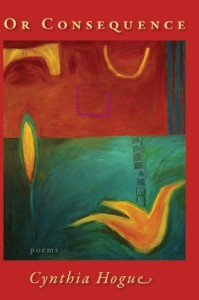

Fifteen people, mostly women, were gathered in a hotel conference room in Victoria, British Columbia — one of those grand old buildings where the wireless doesn’t work and photographs of Queen Elizabeth adorn the lobby. The space was cramped and airless, so someone’s leather satchel propped open the heavy door. Four scholars had just delivered papers on the effects of literary patronage in the modernist era, and during the lively question period the group discussed contemporary versions of the phenomenon: how universities have become North American poetry’s most significant supporters, for example, and the effects of corporate patronage from grant-giving foundations. The limited bounty is distributed unevenly, with many strings attached, as largesse always has been, but it remains very difficult for a poet to keep working and reaching appreciative audiences without such aid. Cynthia Hogue, a specialist in poetry by American women, acknowledged these conditions when she referred to the adage that the best work eventually rises to the top regardless of how resources flow. “We know that’s not true,” she said. Half of the people present sighed. Although there is some correlation between canonicity and the power of the verse, the more one reads, the more exceptions one finds. It also becomes obvious that reception shapes poetry as it is being produced. A few poets are brilliantly ruthless competitors who claim starring roles in the stories now being told about contemporary writing. Others pretend to ignore the jockeying completely; most occupy some ambivalent middle ground. The consequence for a passionate poetry reader is that one has to keep sitting in a series of small rooms, wedging the door open, hoping for a signal and leveling arguments about why the poetry one loves deserves better accommodations.
Cynthia Hogue has co-edited influential anthologies and published distinguished works of scholarship; these writings advance her own passionate arguments on behalf of the poetry she loves. She has also published six poetry collections, won major awards and earned an endowed chair at Arizona State University. In the competition for patronage, she has fared better than most. Still, her own verse is not as widely known as it ought to be. Or Consequence, Hogue’s 2010 collection from Red Hen Press, occupies a space between the various schools and movements that undergird contemporary poetic reputations and shape the field’s controlling narratives. Or Consequence develops many of the obsessions percolating through Hogue’s previous books, but it also takes an analytic turn. It is Hogue’s most ambitious collection in its multilayered pitch for human and aesthetic connection. Such bridges are sustained, according to Hogue, by the partial, precarious, and yet profoundly important stories we tell about ourselves and others.
HOGUE BEGAN PUBLISHING poetry in the eighties, oscillating between mystical lyricism and a fierce poetry of witness. Her first book, When Parallels Cross (Whiteknights Press, 1983), a limited edition fine press publication in England, is now difficult to find, although Hogue reworks and expands the material nearly two decades later for Flux (New Issues Press, 2002). Woman in Red (Ahsahta Press, 1989) continues her exploration of myths and folktales, particularly narratives about predation and the dangers girls and women face, but in a looser, more direct style. The poems in The Never Wife (Mammoth Press, 1999), her next collection, are more powerful and more controlled in their handling of similar material. Assault and violent death are recurrent subjects; a sequence about New Orleans in the early nineties is particularly memorable, as is the elegy “Domestic Memorial” and the darkly funny “Epithalamium.” These early books also echo with references to Hogue’s touchstone poets, particularly Emily Dickinson, whose phrases and fascinations continue to resonate in Hogue’s recent work.
The mystical and surreal strain in Hogue’s poetry emerges vibrantly in the wonderful collection Flux. This book, containing Hogue’s most sound-driven and perhaps her most elliptical poetry, layers the landscapes of Iceland and the American Southwest so that they seem strangely akin in their desolation — dreamlike places of death, birth and other transformations. For one character, “sound becomes a trail,” epitomizing the intertwined motifs of listening and traveling as Hogue follows language to its mysterious sources. She explores the idea and the origins of voice more deliberately and intellectually in The Incognito Body (Red Hen, 2006), another especially beautiful book. The Incognito Body begins with the oracle at Delphi, ends with psalms and centers on the profoundly dislocating experience of major illness. The book’s fragmentary title sequence engages the intense chronic pain of rheumatoid arthritis in both a theoretical and a visceral way. Hogue juxtaposes passages in meter and rhyme with blocks of scientific prose, capitalizes bits of words to suggest surprising correspondences — messages buried within messages — and uses shifting margins to represent a radically divided self. The scholar Elaine Scarry, whom Hogue quotes in an epigraph, has influentially argued that pain destroys language, but while Hogue dramatizes this ruin by repeatedly breaking the lyric spell she is so good at casting, she also questions Scarry’s premises. Pain, Hogue’s poetry implies, magnifies a division that is always a part of human experience. We are bodies, but we also exist through language and dream, translating our senses’ sybil-line pronouncements in shifting, contradictory ways.
The boundaries of the self, the experience of consciousness, and the tricky business of representing selfhood become the chief material of Or Consequence. This is a humane book about having survived pain and found joy, by a person deeply interested in continuities and ruptures between past and present; its poems explore borderlands and liminal places with an emphasis on connection rather than division. One of its most surprising aspects is how it encompasses both philosophy and autobiography, intellectual exploration and examination of feeling, especially love. Or Consequence is full of medium-length poems that accrue force through the complexity of juxtaposed ideas more than through the resonance of interwoven sounds. The collection is thus less lyrical than her earlier books, stretching the mode to embrace an unusually wide scope: Hogue’s poetry considers — with appropriate measures of skepticism, humor and kindness — what it means to be a twenty-first-century citizen of the United States.
To start with the middle: the second of the book’s three sections, “New Orleans Suite,” calls back to Hogue’s earlier writing about that city and provides a counterpart to her recent collaboration with photographer Rebecca Ross in When the Water Came: Evacuees of Hurricane Katrina (UNO Press, 2010). “Arseniad” tells the extraordinary tale of a woman, referred to in court documents as “Arsene (alias Cora),” who traveled to France as a slave with her owners in 1836 and automatically became, by French law, a free person. Eight years later, back in New Orleans, Arsene’s former owner tried to sell her as chattel. She sued for her liberty, won the case, and disappeared from historical record. It is enormously problematic for a white poet to represent the experience of a former slave who can no longer speak for herself. Arsene exists now only in secondhand accounts, preserved in an archive. Hogue conveys respect by carefully distinguishing fact from conjecture and directly acknowledging her distance from Arsene: “My words cannot find her / or become her.” Hogue’s deference could squash the vitality of the poem, but it doesn’t; instead, she preserves a sense that Arsene was a real person, irreducible to a symbol and celebrates her triumphant escape from representation in poetry or definition by racist law. Hogue also recreates the shiver an archival researcher feels when history becomes intensely present, if only momentarily. “Arseniad” invites readers to share Hogue’s sense of uncanny, improbable connection to Arsene.
Other pieces in “New Orleans Suite,” set after the hurricanes and their terrible aftermath, deepen the meaning of Arsene’s escape and complicate “Arseniad”’s evocation of the archive. Two ekphrastic poems allude to “Floodwall,” artist Jana Napoli’s installation built from hundreds of salvaged empty bureau, desk and cabinet drawers. Both Napoli and Hogue focus on what has been lost. In “Seeking as in: Sign (Silence),” Hogue can’t even find Napoli’s installation and wanders around New York on a February night asking after Liberty Street. In her journey she first avoids and then returns to speak to a homeless veteran before finally discovering the wreckage of another twenty-first-century disaster: the absence that is Ground Zero. Hogue represents the contemporary United States as a marred, unjust place, but her response is to keep looking for connection and trying to make meaning. “The Green Card Is Not Green,” another multi-part poem near the end of the book, is a terrific example. Hogue mocks the absurdly empty language of bureaucracy and details the impediments to real exchange the U.S. government creates:
I enter a strange country
and myself become strange. Étrangère.
At that moment, my Resident Alien husband becomes Citizen.
We are, between us,
two beings of determinate but shifting identities,
always in transit, self-shifting,
one of us word-less,
one of us defined by prohibitions. . . .
You are invited to submit
an application for an extension
of the red tape in which to encase
your green card.
The latter experiences are grounded in marriage, a union between two separate beings — in this case French and American. Their romance, one bridge among many, is central to the collection.
These politically charged poems give Or Consequence heft, but the book also contains many pages of lyric meditation, particularly in the intermittent “Étude”s. The witty linguistic play of the latter poems teases out the speaker’s self-consciousness about language as a medium — imperfect, and yet an instrument of human connection. The most beautiful is “Étude (on Memory),” recounting a visit to the Loire Valley that reflects on its invasion in 1940:
Ramparts form a sheer wall
of mossed granite, desiccate tufts
on nubbed stone: the green will
that was here gone to ground
but around we walk on the crest
in a driving wind. The grit in it
force of it opens our coats,
deepens the crag of cheek when you grin,
reddens the freckles where your hair recedes.
I hear my name called so clearly I glance back.
It’s your voice but you aren’t there
(a resonance or vibration the brain perceives),
maybe the memory of having heard. . . .
The poem concerns a violent rupture of borders and describes a hard landscape, now full of graves and plaques. The wind even tears at this couple’s clothing, plucking away their bodily warmth. Nonetheless, several elements work to counteract the assault and repair the damage. Hogue weaves the lines together sonically through internal rhyme (ground/around), pararhyme (wall/will) and the reshuffled consonants of “crest” and “coats.” A voice haunts her, suggesting communication just beyond the threshold of perception. Most moving, though, are the links between the speaker and her vividly present companion, who mirrors the rugged terrain through his “crag of cheek.” The poem ends as his hand catches hers, “so/ cold I turn.” There is no denying the harshness of the environment and its effects on the couple, but Hogue emphasizes their bond nevertheless.
The title Or Consequence doesn’t compel my interest as thoroughly as the poems within. It does highlight causation, though, and how Hogue handles the costs and pleasures of narrative. In the final poem, “The Bridge,” she paraphrases Vaclav Havel, endorsing
. . .the refusal
to live without meaning,
without, finally, love,
even in conditions as
hopeless as ours. . . .
When Hogue dismantles words, sentences, truisms and patriotic rhetoric, she is critiquing the most pernicious uses of language around us, but that critique is only a first move, and not the most important one. She is also propping open doors, assembling material for monuments, and housing a truly constructive spirit of respect and connection. Politicians often seek to “control the narrative” more cannily and doggedly than they redress injustice, so it is understandable that many contemporary poets profoundly distrust story, right down to the level of syntax. Without it, though, there can be no arguments on behalf of love or art. A poem’s intimate room needs to stand ajar, signals beamed in and conversation spilling into the halls. Hogue’s poetics of generosity is so thoughtfully, deftly framed that she actually manages it.
Lesley Wheeler is the author of Heterotopia, Heathen and Voicing American Poetry. She is a professor of English at Washington and Lee University.